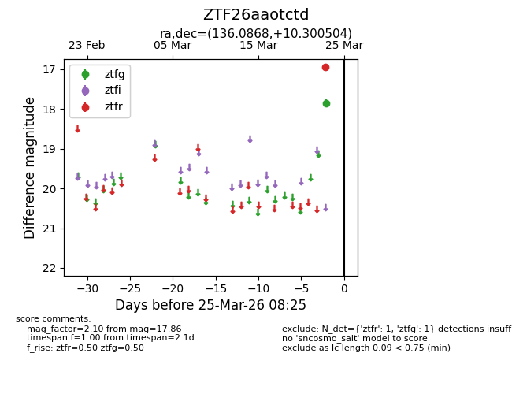
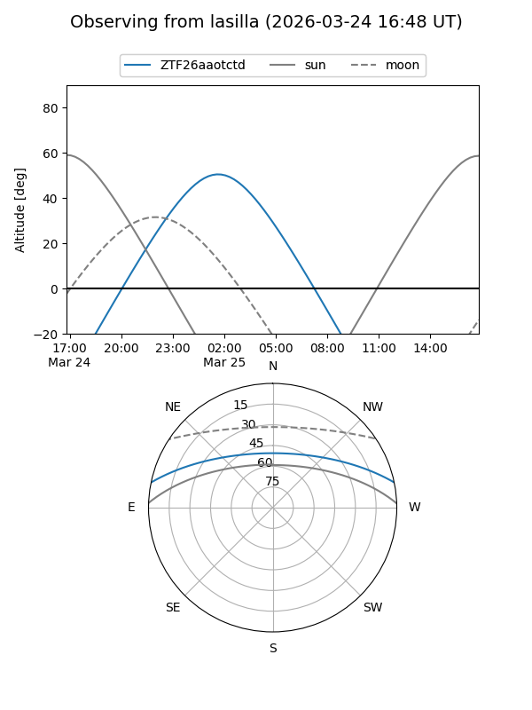
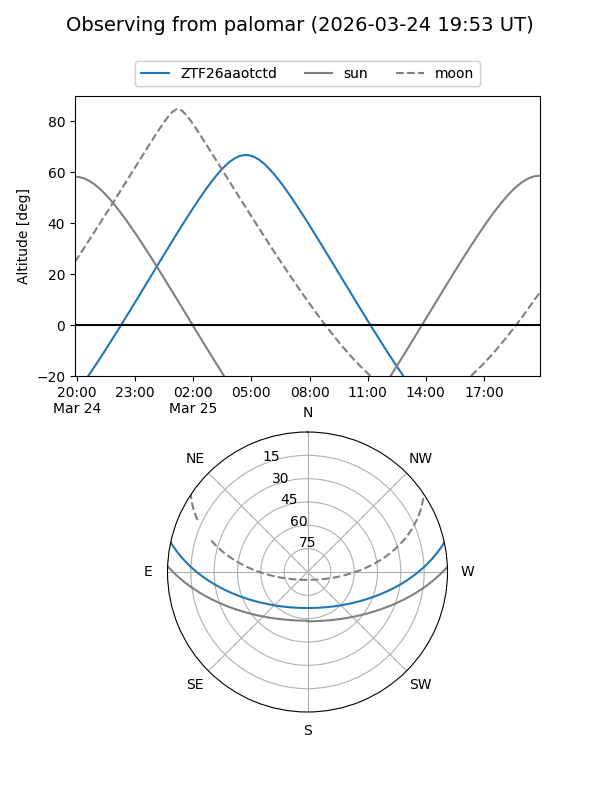

ZTF26aaotctd
Target ZTF26aaotctd at 2026-03-25 08:27
Aliases and brokers:
FINK: link
Lasair: link
ALeRCE: link
alt names
ZTF26aaotctd (ztf,fink_ztf)
Coordinates:
equatorial (ra, dec) = 136.0868,+10.30050
equatorial (HMS+DMS) = 09:04:20.84,+10:18:01.81
galactic (l, b) = (218.9452,+34.14960)
Flags:
Photometry:
last ztfg=17.86, ztfr=16.94
1 ztfg, 1 ztfr detections
Lightcurve

Visibility


Additional plots